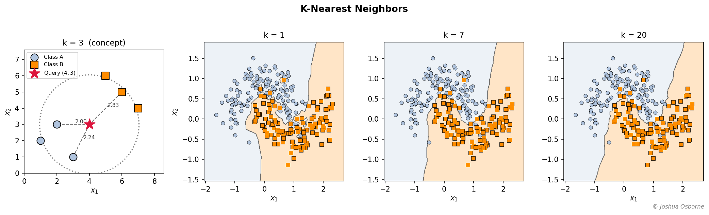
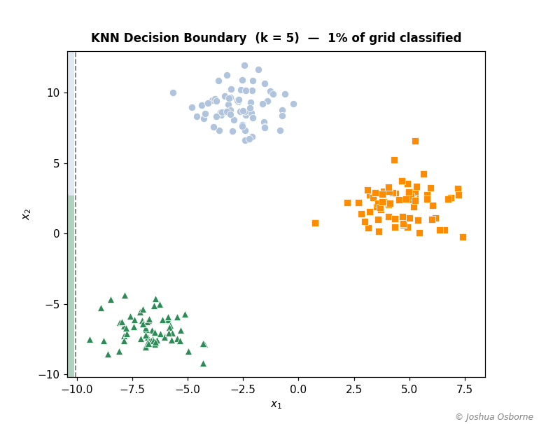

Statistics Notes
Non-parametric classification and regression by majority vote among the k closest training points.
Contents
K-Nearest Neighbors (KNN) predicts the output for a new point by finding the \(k\) closest training examples under some distance metric (euclidean,malhalinobis,manhattan, etc.). Can be used in both regression and classification problems.
Most algorithms fit a parametric model during training and discard the raw data afterward. KNN, however, is a non-parametric method which keeps every training point, and at prediction time looks up the neighborhood around the queried point.
A linear classifier forces a straight boundary; KNN adapts freely because each prediction is based only on whichever training points are locally relevant. The trade-off is that prediction requires searching through all training examples, and performance degrades in high-dimensional spaces (see curse of dimensionality). For small-to-moderate datasets with modest dimensions, however, KNN is a powerful and assumption-free baseline.
Let \(\mathcal{D} = \{(x_1, y_1), \ldots, (x_n, y_n)\}\) be the training dataset where \(x_i \in \mathbb{R}^p\) (This is read as \(x\) is a vector of real numbers of size \(p\)) and \(y_i\) is either a class label (classification) or a real value (regression).
Given a distance function \(d(\cdot, \cdot)\) and a positive integer \(k\), the \(k\)-neighborhood of a query point \(x\) is: \[\mathcal{N}_k(x) = \text{the } k \text{ indices } i \text{ with smallest } d(x,\, x_i)\]
Classification: predict the mode class among neighbors (this means pick the label that shows up the most): \[\hat{y}(x) = \operatorname{mode}\{ y_i : i \in \mathcal{N}_k(x) \}\]
Regression: predict the mean response among neighbors: \[\hat{y}(x) = \frac{1}{k} \sum_{i \in \mathcal{N}_k(x)} y_i\]
KNN is non-parametric: there are no coefficients estimated during training. The training set itself serves as the model, which is why KNN is called a lazy learner.
| Symbol | Type | Meaning |
|---|---|---|
| \(\mathcal{D}\) | set | full training dataset \(\{(x_1,y_1),\ldots,(x_n,y_n)\}\) |
| \(n\) | integer | number of training examples |
| \(p\) | integer | number of features (dimension of each point) |
| \(i\) | integer | index of a training example, \(i = 1,\ldots,n\) |
| \(j\) | integer | index of a feature coordinate, \(j = 1,\ldots,p\) |
| \(x_i \in \mathbb{R}^p\) | vector | \(i\)-th training feature vector |
| \(x_j\) | scalar | \(j\)-th coordinate of a feature vector \(x\) |
| \(y_i\) | scalar or label | target for training example \(i\) |
| \(x\) | vector | query point to be classified or regressed |
| \(x'\) | vector | nearest-neighbor training point to \(x\) (used in Cover-Hart derivation) |
| \(y'\) | scalar or label | label of the nearest-neighbor point \(x'\) |
| \(k\) | integer | number of neighbors to consult |
| \(d(x, x')\) | scalar | distance between two points under the chosen metric |
| \(r\) | scalar | order parameter in the Minkowski metric (\(r \geq 1\)); unrelated to \(r(x)\) below |
| \(\mathcal{N}_k(x)\) | index set | the indices of the \(k\) nearest neighbors of \(x\) |
| \(\hat{y}(x)\) | scalar or label | predicted output at \(x\) |
| \(w_i\) | scalar | weight assigned to neighbor \(i\) in weighted KNN |
| \(\mathbb{E}[\cdot]\) | operator | expectation (average over the data distribution) |
The default choice is Euclidean distance (\(\ell_2\) norm): \[d_2(x,\, x') = \sqrt{\sum_{j=1}^{p}(x_j - x'_j)^2}\]
The Minkowski family generalizes this with a single parameter \(r \geq 1\): \[d_r(x,\, x') = \left( \sum_{j=1}^{p} |x_j - x'_j|^r \right)^{1/r}\]
| \(r\) | Name | Character |
|---|---|---|
| 1 | Manhattan (\(\ell_1\)) | Sum of absolute coordinate differences; robust to outliers |
| 2 | Euclidean (\(\ell_2\)) | Standard geometric distance; most common default |
| \(\infty\) | Chebyshev (\(\ell_\infty\)) | Maximum coordinate difference; \(\lim_{r\to\infty} d_r = \max_j\lvert x_j - x'_j\rvert\) |
Feature scaling matters. If feature \(x_1\) ranges over \([0, 1000]\) and \(x_2\) over \([0, 1]\), Euclidean distance is dominated entirely by \(x_1\). Therefore, standardization is an important step before applying the KNN, this means we shift each feature to zero mean and unit variance so that each feature has equal weighting.
Collect the labels of the \(k\) nearest neighbors and take a majority vote: \[\hat{y}(x) = \operatorname{mode}\{ y_i : i \in \mathcal{N}_k(x) \}\]
In the case of a tie, common resolutions are to reduce \(k\) by one or to pick the class whose nearest member is closest.
Replace the vote with an arithmetic mean of neighbor responses: \[\hat{y}(x) = \frac{1}{k} \sum_{i \in \mathcal{N}_k(x)} y_i\]
This is not a separate algorithm. It is the same KNN algorithm with one change: instead of every neighbor getting an equal vote, a neighbor’s vote is scaled by how close it is to the query point.
Why the standard version feels arbitrary. In plain KNN, all \(k\) neighbors count identically whether a neighbor is 0.1 units away or 50 units away. That is a strange design choice. A neighbor that is nearly on top of the query point should be much more informative.
The fix. Assign each neighbor a weight equal to the reciprocal of its distance to the query: \[w_i = \frac{1}{d(x,\, x_i)}\]
Then replace the plain mean (regression) or majority vote (classification) with a weighted version: \[\hat{y}(x) = \frac{\displaystyle\sum_{i \in \mathcal{N}_k(x)} w_i\, y_i}{\displaystyle\sum_{i \in \mathcal{N}_k(x)} w_i}\]
The denominator normalizes so the weights sum to 1, keeping \(\hat{y}\) in the same range as the \(y_i\).
Edge case. If the query point exactly coincides with a training point, \(d = 0\) and \(w_i = 1/0\) is undefined. The standard fix is to return that training point’s label directly (distance 0 means perfect match).
\(k = 1\): each training point defines its own Voronoi cell. Training error is zero. The boundary is highly irregular (high variance).
\(k = n\): every query returns the global majority class. No local adaptation whatsoever (high bias).
Optimal \(k\): found by cross-validation. A common starting rule of thumb is \(k \approx \sqrt{n}\).
See bias-variance tradeoff for the formal MSE decomposition.
This is a theoretical result that proves 1-NN error is at most twice the Bayes error (the lowest error any classifier can ever achieve) as \(n \to \infty\). It is rarely invoked directly in practice, but it has a few limited uses:
Setup. Six training points in \(\mathbb{R}^2\), binary classification (A or B). Query point \(x_q = (4, 3)\). Use \(k = 3\) and Euclidean distance.
| \(i\) | \(x_1\) | \(x_2\) | Class |
|---|---|---|---|
| 1 | 1 | 2 | A |
| 2 | 2 | 3 | A |
| 3 | 3 | 1 | A |
| 4 | 6 | 5 | B |
| 5 | 7 | 4 | B |
| 6 | 5 | 6 | B |
Step 1: Compute Euclidean distances from \(x_q = (4, 3)\).
\[d(x_q, x_1) = \sqrt{(4-1)^2 + (3-2)^2} = \sqrt{9 + 1} = \sqrt{10} \approx 3.16\] \[d(x_q, x_2) = \sqrt{(4-2)^2 + (3-3)^2} = \sqrt{4 + 0} = 2.00\] \[d(x_q, x_3) = \sqrt{(4-3)^2 + (3-1)^2} = \sqrt{1 + 4} = \sqrt{5} \approx 2.24\] \[d(x_q, x_4) = \sqrt{(4-6)^2 + (3-5)^2} = \sqrt{4 + 4} = \sqrt{8} \approx 2.83\] \[d(x_q, x_5) = \sqrt{(4-7)^2 + (3-4)^2} = \sqrt{9 + 1} = \sqrt{10} \approx 3.16\] \[d(x_q, x_6) = \sqrt{(4-5)^2 + (3-6)^2} = \sqrt{1 + 9} = \sqrt{10} \approx 3.16\]
Step 2: Rank by distance.
| Rank | \(i\) | Distance | Class |
|---|---|---|---|
| 1 | 2 | 2.00 | A |
| 2 | 3 | 2.24 | A |
| 3 | 4 | 2.83 | B |
| 4 | 1 | 3.16 | A |
| 5 | 5 | 3.16 | B |
| 6 | 6 | 3.16 | B |
Step 3: Take the top \(k = 3\) neighbors \(\{x_2, x_3, x_4\}\) with classes \(\{A, A, B\}\).
Step 4: Majority vote. 2 votes for A, 1 for B. Prediction: Class A.
Sensitivity check. With \(k = 5\) the neighborhood extends to \(\{x_2, x_3, x_4, x_1, x_5\}\): classes \(\{A, A, B, A, B\}\), giving 3 A vs 2 B. Still predicts A. At \(k = 6\) all points are included (3 A vs 3 B) and a tiebreak convention is needed.
KNN draws a decision boundary that literally hugs the training data. At \(k = 1\) the boundary is a Voronoi tessellation, passing midway between every pair of neighboring points from opposite classes. As \(k\) grows the boundary smooths out, ignoring small clusters and outliers in favor of the broader regional class distribution.
The figure below shows both effects. The leftmost panel is the worked example: the red star is the query point \((4, 3)\), dashed lines connect it to its three nearest neighbors, and the dashed circle marks the edge of the neighborhood. The three right panels show how the decision boundary on a two-moon dataset evolves from jagged (\(k = 1\)) through intermediate (\(k = 7\)) to smooth (\(k = 20\)).

The animation below shows how the boundary is actually constructed: every point on a fine mesh grid is classified by its 5 nearest neighbors, one column at a time. The colored region fills in left to right until the full decision boundary emerges.

“KNN has no training phase, so it is always fast.” There is no model-fitting cost, but prediction requires computing distances to every one of the \(n\) training points. For large \(n\), naive KNN is the bottleneck. Tree-based indexes (kd-tree, ball-tree) and approximate methods (FAISS, Annoy) address this but do not eliminate the fundamental \(O(np)\) memory requirement.
“Larger k avoids overfitting, so always choose large k.” Very large \(k\) introduces high bias. At \(k = n\) the model always predicts the global majority class and is blind to all local structure. The right \(k\) is dataset-dependent and found by cross-validation.
“KNN works well in high dimensions.” In high dimensions all pairwise distances concentrate near the same value. The ratio of the maximum to minimum distance approaches 1 as \(p\) grows, which makes “nearest” meaningless. KNN should be paired with dimensionality reduction (PCA, UMAP) or feature selection when \(p\) is large.
“Feature units do not matter because we are just measuring distance.” Units matter enormously. A feature in kilometers and one in millimeters will dominate distance calculations unless both are standardized to comparable scales first.
“KNN is only a classification algorithm.” KNN extends naturally to regression (mean of neighbor responses), density estimation, anomaly detection (high distance to \(k\)-th neighbor flags anomalies), and missing-value imputation.
“The Cover-Hart bound means 1-NN is close to optimal, so use k = 1.” The bound holds only as \(n \to \infty\). On finite datasets, \(k = 1\) produces high-variance predictions that respond to label noise and outliers. Use the bound as a theoretical floor, not a practical recommendation.
bias-variance tradeoff, What is machine learning, Naive Bayes, DBScan, K-means , Bayes Rule, Principal Component Analysis